Chapitre I : Evolution d’une réaction chimique
I - Evolution des systèmes chimiques
1. Système stables et systèmes cinétiquement inertes Lorsque; l’on constitue un système chimique en mettant en contact différents corps purs, il arrive parfois qu’on ne décèle aucune évolution du système pendant la durée des observations. Cette apparente inertie peut correspondre à deux situations très différentes :
+ Le système n’évolue pas, car aucune réaction naturelle ne peut s’y dérouler : Le système est stable
Exemple : Solution aqueuse contenant les ions :
Cu2+, Mn2+, SO42-
Mélangeons 1 ou 2 cm3 d’une solution bleue de sulfate de cuivre (II) avec 50cm3 d’une solution quasiment incolore de sulfate de manganèse (II) ; après homogénéisation, la solution présente une coloration bleue pale qui persiste indéfiniment. D’après l’ordre des potentiels standards des différents couples envisageables (Doc 1), aucune réaction ne se produit dans cette solution.
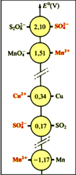
Le système n’évolue pas, car la réaction naturelle qui peut s’y dérouler est très lente : Le système est cinétiquement inerte
Exemple : Solution aqueuse de permanganate de potassium
Dissolvons quelques cristaux de permanganate de potassium dans de l’eau distillée ; la coloration violette de la solution obtenue reste inchangée plusieurs jours : Les ions MnO4-
- ne semblent donc subir aucune réaction de réduction. En milieu non acide, l’ion MnO4-
- est généralement réduit en dioxyde de manganèse MnO2. D’après les potentiels standards (Doc.2), la solution aqueuse de permanganate de potassium devrait être le siège de la réaction naturelle, d’équation :
4MnO4- + 2H2O → 4MnO2 + 3O2 + 4OH-
2. Classification cinétique des réactions naturelles
a. Réaction instantanée :
Une réaction est dite instantanée lorsque l’évolution du système est si rapide qu’à nos yeux, la réaction achevée à l’instant même ou les réactifs entrent en contact.
Exemple : Action de la soude sur certains cations métalliques
Expérience : Ajoutons quelques gouttes d’une solution de soude dans trois bécher contenant respectivement des solutions de nitrate de cuivre (II) de nitrate de plomb (II) et de nitrate de fer (II). Un précipité gélatineux d’hydroxyde apparaît instantanément dans les trois béchers.
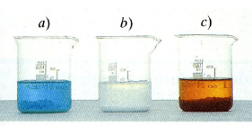
b. Réaction lente :
Une réaction est dite lente lorsque nos sens nous permettent de suivre son déroulement, qui dure de quelques secondes à plusieurs minutes, voire plusieurs dizaines de minutes.
Exemple : Action des ions permanganate sur l’acide oxalique
Expérience : Ajoutons à une solution incolore d’acide oxalique H2C2O4 quelques cm3 d’une solution diluée et acidifiée de KMnO2. La teinte violette due aux ions MnO4- persiste quelques minutes, puis une coloration brune apparaît et la solution devient incolore.
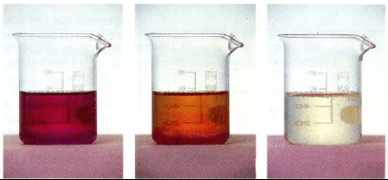
4MnO4- + 6H3O+ + 5H2C2O4 → 2Mn2+ + 14H2O + 10CO2
c. Réaction très lente
Une réaction est dite très lente lorsqu’elle ne s’achève qu’au bout de plusieurs heures, voire plusieurs jours.
Exemple : Estérification et hydrolyse des esters.
d. Réaction infiniment lente
Une réaction est dite infiniment lente lorsque l’évolution du système ne peut être appréciée, même après plusieurs jours : le système est cinétiquement inerte.
Exemple : Synthèse de l’ammoniac à partir des corps simples
N2 + 3H2 → 2NH3
3. Avancement de la réaction : X
Soit l’équation chimique :
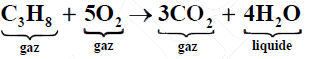
Elle indique que la combustion complète de 1 mole de propane s’accompagne de la disparition de 5 moles de dioxygène et de la formation de 3 moles de dioxyde de carbone et 4 moles d’eau.
En conséquence, lorsque X moles de propane ont disparu, 5X moles de dioxygène ont été consommées, alors que 3X moles de dioxyde de carbone et 4X moles d’eau ont été produites.
La quantité de matière X est appelée avancement de la réaction. Cette grandeur, exprimée en mole, permet de suivre l’évolution de la composition d’un système au cours d’une transformation chimique.
Le tableau ci-dessous présente l’évolution des quantités de matière au cours de la transformation.
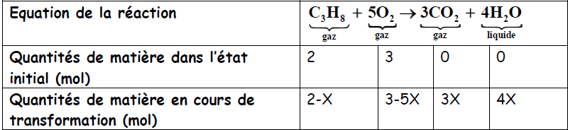
4. Réactif limitant et état final temps :
a. Etat final
L’état final du système est atteint lorsqu’il n’évolue plus ; l’un au moins des réactifs a été entièrement consommé : c’est le réactif limitant. L’avancement, alors maximal, est noté Xmax.
b. Réactif limitant
+ Méthode 1 : Dans l’exemple précédent, quel est le réactif limitant ?
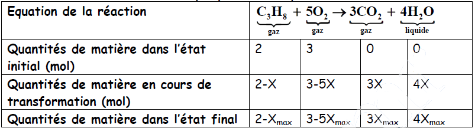
- Si le propanone est le réactif limitant :
2-Xmax = 0, soit Xmax = 2 ml.
La quantité de dioxygène restante vaut : 3-5Xmax = -7 mol.
C’est impossible, une quantité de matière ne peut pas être négative.
- Si le dioxygène est le réactif limitant :
3-5Xmax = 0, soit Xmax = 0,6 mol.
La quantité de propane restante vaut 2-Xmax = 1,4 mol > 0.
Le dioxygène est donc le réactif limitant.
La valeur de Xmax est la plus faible des deux valeurs obtenues.
+ Méthode 2 :
Soit la réaction entre les ions iodure et l’eau oxygénée
H2O2 + 2H+ + 2I- → 2H2O + I2
Cette réaction est totale : Elle ne s’arrête que lorsque l’un des réactifs a été
entièrement consommé. Ce réactif est appelé réactif limitant.
Exemple : Détermination du réactif limitant
H2O2 + 2H+ + 2I- → 2H2O + I2
A t=0 : no(H2O2)= 0,28 mmol ; no(H+)= 0,60 mmol ; no(I2)= 1,0 mmol
Nous constatons que :
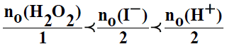
Le mélange réactionnel initial n’est donc pas stoechiométrique : H2O2 est en défaut par rapport aux autres réactifs H+ et I-. La réaction s’arrête donc quand H2O2 a été entièrement réduit par les ions I-.
H2O2 : est le réactif limitant.
Si :
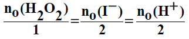
le mélange est dit stoechiométrique
Un mélange est dit stoechiométrique si les quantités de matière initiales des réactifs qui le constituent sont dans les proportions des nombres stoechiométriques de ces réactifs dans l’équation de la réaction. Les quantités de matière de tous les réactifs s’annulent alors pour la même valeur de l’avancement. A la fin de la transformation chimique, les réactifs sont entièrement consommés.
5. Temps de demi-réaction
On appelle temps de demi-réaction t1/2 la durée nécessaire pour consommer la moitié du réactif limitant initialement présent.
Exemple :
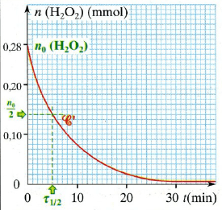
6. Dosage
Doser une espèce chimique en solution, c’est déterminer sa concentration dans cette solution. Pour y parvenir, on fait réagir totalement cette espèce selon une réaction, dite réaction de dosage, d’équation connue, avec une autre espèce, dite réactif titrant, introduite en quantité connue. Lorsque les deux réactifs ont été mélangés en proportions stoechiométriques, on dit que l’on a atteint l’équivalence du dosage. Cette équivalence est repérée, par exemple, par un changement de couleur.
Exemple : Dosage iodrimétrique
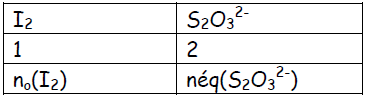
I2 + 2S2O32- → 2I- + S4O62-.
no(I2) = néq(S2O32-) soit no(I2) = 1/2.C(S2O32-).V(S2O32-)
no(I2) : Quantité de I2 présent dans l’échantillon à doser dont le volume est Vo(I2)
C(S2O32-) : la concentration, connue, de S2O32-
V(S2O32-) : volume ajouté de S2O32-
II - Aspect quantitatif de l’évolution temporelle d’un système chimique
1. Vitesse de formation des produits d’une réaction :
Considérons la réaction entre les ions permanganate et les ions fer (II) en milieu acide, dont l’équation-bilan est :
4MnO4- + 5Fe2+ + 8H3O+ → Mn2+ + 5Fe3+ + 14H2O
Supposons que l’on puisse déterminer, à divers instant, la quantité d’ions manganèse (II) que contient le mélange réactionnel : soit n(Mn2+) cette quantité de matière. On peut alors tracer la courbe C représentative de l’application : t → n(Mn2+)
C'est une courbe croissante puisque les ions Mn2+ sont produits par la réaction.
Soient deux instants de dates respectives t1 et t2, t2 étant supérieure à t1.
Soient n(Mn2+) (t1) et n(Mn2+) (t2) les quantités (de matière) d’ions manganèse (II) que contient le mélange réactionnel à ces deux instants.
a) Vitesse moyenne :
La vitesse moyenne de formation des ions Mn2+ pendant l’intervalle t2 – t1 est :
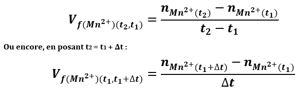
La vitesse de formation d’un corps est égale au quotient d’une quantité de matière par un temps : elle s’exprime donc en mole par seconde. On peut utiliser des autres unités : mol/h ou mmol/s….
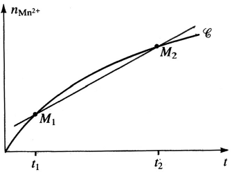
b) Vitesse instantanée :
La vitesse instantanée de formation des ions Mn2+ à l’instant de date t1 est la limite, quand t2 tend vers t1 (ou quand Δt = t2 – t1 tend vers 0), du quotient définissant la vitesse moyenne entre t1 et t2 = t1 + Δt :
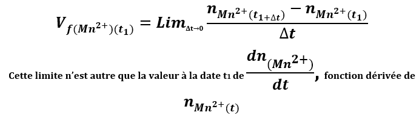
Définition : la vitesse de formation des ions Mn2+ à l’instant de date t1 est égale au coefficient directeur (ou pente) de la tangente à la courbe C au point d’abscisse t1.
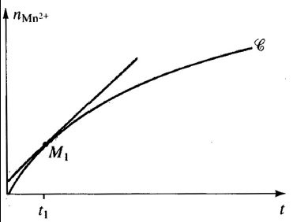
2°) Vitesse de disparition des réactifs :
a) Vitesse moyenne :
Au cours de la réaction, les quantités de matières des réactifs MnO4-, H3O+ et Fe2+ diminuent quand t augmente ; les dérivés de ces quantités de matière par rapport au temps ont donc des valeurs négatives.
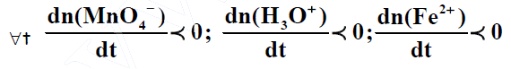
Afin que la vitesse de disparition d’un réactif soit une grandeur positive, on définit la vitesse moyenne de disparition comme l’opposée du taux de variation de la quantité de matière.
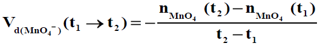
b) Vitesse instantanée :
De même, la vitesse instantanée de disparition de l’ion MnO4- à l’instant de date t1 est égale à l’opposée de la valeur de la dérivée de n(MnO4-) (t) à l’instant de date t1.
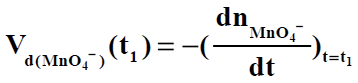
c) Relation entre les vitesses :
Soit une réaction d’équation-bilan :
α.A + β.B → σ.C + δ.D
Et nA, nB, nC et nD les quantités de matière des différents corps. Les vitesses instantanées de formation des corps C et D sont données par :
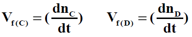
Les vitesses instantanées de disparition des corps A et B sont données par :
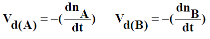
Les vitesses de formation des produits et les vitesses de disparition des réactifs d’une réaction chimique déterminée ne sont pas indépendantes les unes des autres : Les variations des quantités de matières des différents participants sont en effet proportionnelles.
Ainsi, si entre t1 et t2 les quantités de matières de A, B, C et D varient de ΔnA, ΔnB, ΔnC et ΔnD (grandeurs algébriques), il existe entre ces variations la relation :
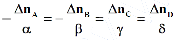
En divisant tous les termes par Δt, nous obtenons des relations semblables entre les vitesses moyennes.
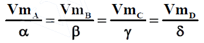
En faisant tendre Δt → 0, nous établissons enfin les relations concernant les vitesses instantanées.
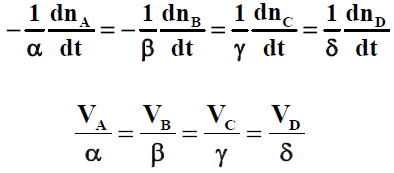